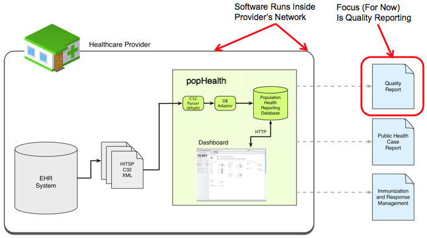

General Overview Questions
- What is popHealth?
- What is the objective of popHealth?
- Who are the intended users of popHealth?
- What is the popHealth design philosophy?
- Do I need to be a healthcare provider or EHR vendor to use popHealth?
Technical Detail Questions
- How will popHealth be used to report EHR quality measurement data?
- Can popHealth be used to demonstrate Meaningful Use?
- What standards does popHealth use?
- What is basic Concept of Operations for use of popHealth by a provider?
- What web browsers can be used with popHealth?
- Can a user add new measurements to the list of fields to choose from?
- What programming languages will popHealth use?
Open Source Questions
- How is popHealth related to CONNECT open source?
- How is popHealth related to project Laika?
- How much does it cost to use popHealth?
- What are the open source licensing details associated with popHealth?
- Can I contribute software source code to popHealth?
- How is communication managed on the popHealth project?
popHealth is a prototype open source tool that automates population health reporting. popHealth integrates with a healthcare provider's electronic health record (EHR) system to produce summary quality measures on the provider's patient population. popHealth provides a streamlined mechanism for reporting summary quality information to federal agencies.
popHealth is designed to simplify the reporting of summary quality measures, and streamline the exchange of summary quality data.
popHealth has been designed to provide proof of concept to healthcare providers, and EHR vendors. Providers are empowered to better understand the health of their patient population through reports of quality measures. EHR vendors are free to download, use, and redistribute the popHealth software in their products.
Key to popHealth's value for providers and vendors interested in implementing summary quality reporting:
- The ability to quickly view and report static quality measures based on established quality measures
- Provides users with the ability to dynamically add new, ad hoc reports based upon individually composed queries
- Infrastructure to eventually remotely automate the addition of new quality measure reports, and export multiple modes of reporting output
popHealth is designed for ease of deployment, use and integration with a healthcare provider's EHR system. The software has been designed to be permissive and extensible, with the ability to support various data standards for input and output. All popHealth software, and dependent libraries are available under an open source distribution license.
popHealth demonstrates an alternative approach to population health analysis and reporting. It does this by performing analysis within a healthcare provider's infrastructure and producing a summary data for evaluation and submission. This option provides an alternative to existing models where providers must transport large quantities of data, which simplifies the reporting and review process.
No. While a healthcare provider will have access to real patient records, and an EHR provider will have a much better understanding of the technical details of the data standards that are used for healthcare information technology systems, we have ensured that others can use popHealth. Based on the scope of a user who downloads popHealth, you may be limited in the ability to use popHealth in a production setting. However, even a novice technologist interested in learning more about healthcare information technology will benefit from downloading and setting up an instance of popHealth. Additionally, there are several scripts that can populate popHealth with notionally random patient records, that have some statistical basis on the randomized values.
At its core, popHealth is a simple way of aggregating patients' healthcare data inside a provider's secure operational system. By providing software that can perform analysis and reporting from within a healthcare provider's infrastructure, popHealth demonstrates an alternative approach to population health analysis and reporting. It is an alternative to the existing, legacy model of centralized data collection and analysis.
The reports produced by popHealth are for demonstration purposes and are not currently recognized for reporting sanctioned quality measures. However, the reports, processes and data standards used by popHealth provide examples of the proposed meaningful definitions for quality measures. We are currently attempting to identify how popHealth could be used operationally by US healthcare providers to demonstrate meaningful use on production systems.
popHealth has been designed to be permissive, and support numerous data and transport standards. popHealth's first deployment uses the HITSP C32 standard for data input, and the Physician Quality Report Initiative (PQRI) registry XML for reporting output. popHealth is designed to be extensible, supporting multiple standards for both input and output into the future; CDA documents, HL7 CCD, ASTM CCR, and the HL7 QRDA.
popHealth has been designed to operate within a provider’s infrastructure. This design decision has been made to address privacy and security concerns associated with access to information associated with individual patient records.
popHealth has been developed and tested for use in FireFox 3.0 and higher, Internet Explorer (IE) 7, and IE 8, as well as Safari 4. Support for other web browsers hasn't been tested, but the project will endeavour to support as many web browsers as possible.
Adding new measurements from the continuity of care record, beyond those listed on the dashboard and report views, is possible. However, it requires some reconfiguring by a software engineer. The estimated scope of adding a new measurement (ie. a new lab result type) to the user interface should take under 1 hour for an experienced software engineer.
popHealth runs on JRuby, an implementation of the Ruby programming language atop the Java Virtual Machine (JVM). Developing new software with popHealth, and/or adding new customized features will require non-trivial software development knowledge of the Ruby and Java programming languages.
The popHealth software can be integrated with an EHR to extract patient health record data. The popHealth software has been designed to be flexible, and support a variety of transport protocols for reporting and exchanging the population health report artifacts. This includes integration with the CONNECT File Transfer Adapter plugin, which will be demonstrated at the HIMSS 2010 Interoperability Showcase. Because of CONNECT's role integrating healthcare information technology data and transport standards, the popHealth software and project website are also available via the CONNECT open source website.
The vast majority of the software supporting popHealth runs atop of the MITRE Corporation's open source Laika project infrastructure. All of the supporting Laika software and source code, is also freely available under an Apache 2.0 open source distribution license.
popHealth is a free open source software project. There is no cost to use, modify, integrate, and/or redistribute it.
popHealth is licensed under the Apache 2.0 open source license. If you are interested in more details about the use of software distributed under an Apache 2.0 open source license, see the list of Frequently Asked Questions
Yes! Code contributions, bug fixes, ideas for new features, are all welcome. Our only requirement is that any and all software contributed to popHealth is released under an Apache 2.0 open source distribution license. Source code contributions, as well as dialog/discussions for feature requests and enhancements will be publicly reviewed and vetted by the popHealth project's governing organizations.
To submit a new feature for consideration into the popHealth repository, setup an account on GitHub. Fork the popHealth code, and create a branch of popHealth on your repository. Send the link to your popHealth branch to the popHealth developer email list, and cite either an existing bug or feature from the popHealth project tracker to specify the changes that you are contributing.
If you have suggestions on new features, or want to report a bug that has not yet been tracked, send an email to the developer email list with either the details to reproduce a bug, or detailed description about a suggested feature that you would like to see added to popHealth.
The most prominent, and active activities are always published on the project website. We have attempted to include enough high level information on our project site and our installation instructions available in the source code to setup an instance of popHealth. Whenever possible, please make use of our FAQ and software documentation before exploring other communication channels.
There are three email distribution lists which may also be used to request information about the project's plans and activities. These lists are
- announcements@projectpophealth.org which anyone can subscribe to. Messages to this list are limited to the popHealth governing organizations.
- talk@projectpophealth.org which like the announcement list, anyone can subscribe to. Additionally, anyone is free to submit questions about the project to this list. To prevent spam, all messages are first reviewed by the project team before being forwarded to the distribution list.
- dev@projectpophealth.org is used exclusively for software development questions. Membership to this list is also open to anyone. However, we encourage individuals to limit participation in this list those that are active software engineers. Likewise, anyone is free to submit questions about the project to this list. Similarly, to prevent spam, all messages are first reviewed by the project team before being forwarded to the distribution list.